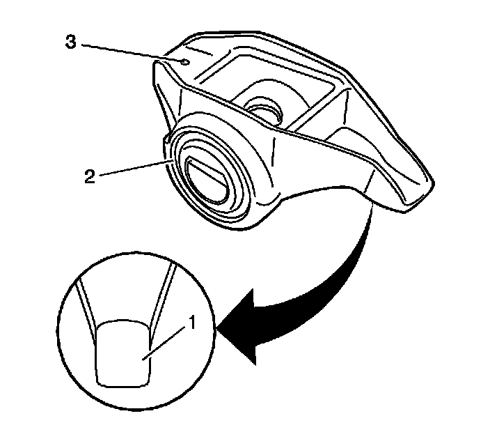

47. Valve Rocker Arm and Push Rod Cleaning and Inspection
Valve Rocker Arm and Push Rods Cleaning and Inspection

Important: Parts that are to be used again must be marked, sorted or organized for assembly.
1. Mark, sort, or organize the components for assembly. Refer to Separating Parts.
2. Clean the components with cleaning solvent.
Caution: Refer to Safety Glasses and Compressed Air Caution.
3. Dry the components with compressed air.
4. Inspect the valve rocker arms bearings (2) for binding or roughness.
5. Inspect the valve rocker arm pushrod sockets (3) and valve stem mating surfaces (1). These surfaces should be smooth with no scoring or exceptional wear.
6. Inspect the pushrods for worn or scored ends. These surfaces should be smooth with no scoring or exceptional wear.
7. Inspect the pushrods for bends. Roll the pushrod on a flat surface to determine if the pushrod is bent.
8. Inspect the pushrod oil passages for restrictions.
9. Inspect the rocker arm pivot supports for cracks, wear, or other damage.